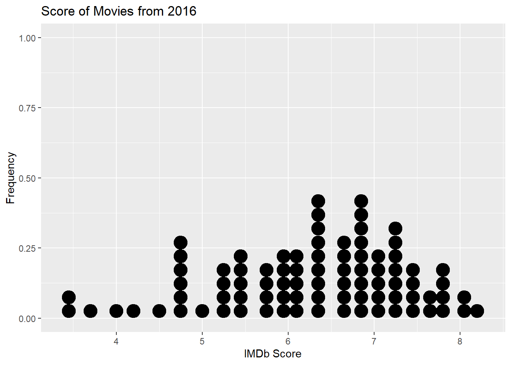
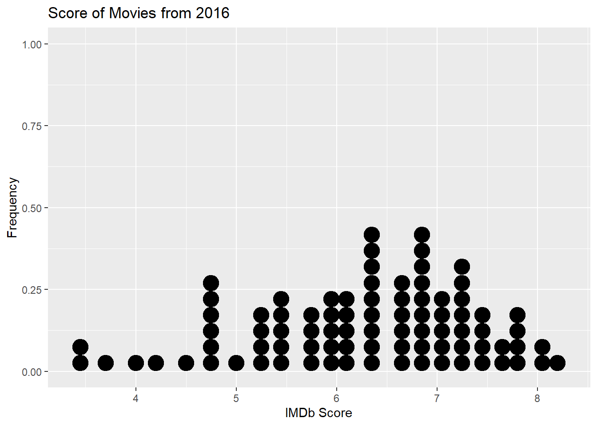
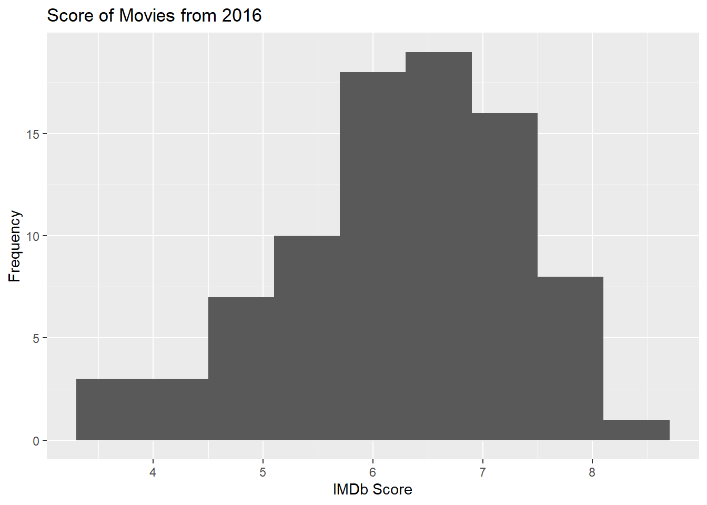

ggplot(data = movies,
mapping = aes(x = imdb_score)) +
geom_dotplot() +
labs(title = "Score of Movies from 2016", # Title for plot
x = "IMDb Score", # Label for x axis
y = "Frequency" # Label for y axis
) 


Identify and create appropriate summary statistics and plots given a data set or research question for quantitative data.
Interpret the following summary statistics in context: median, first quartile, third quartile, standard deviation, interquartile range.
Identify and create appropriate summary statistics and plots given a data set or research question for a single quantitative variable.
Given a plot or set of plots, describe and compare the distribution(s) of a single quantitative variable (center, variability, shape, outliers).
In today’s activity, we will review summary measures and plots for quantitative variables. Some terms covered in this activity are:
Two measures of center: mean, median
Two measures of spread (variability): standard deviation, interquartile range (IQR)
Types of graphs: box plots, dot plots, histograms
A data set was collected on movies released in 2016. Here is a list of some of the variables collected on the observational units, movies released in 2016.
| Variable | Description |
|---|---|
movie_title |
Title of the movie |
budget_mil |
Amount of money (in US $ millions) budgeted for the production of the movie |
revenue_mil |
Amount of money (in US $ millions) the movie made after release |
duration |
Length of the movie (in minutes) |
content_rating |
Rating of the movie ("G", "PG", "PG-13", "R", "Not Rated") |
imdb_score |
IMDb user rating score from 1 to 10 |
genres |
Categories the movie falls into (e.g., Action, Drama, etc.) |
facebook_likes |
Number of likes a movie receives on Facebook |
A dotplot will plot a dot for each value in the data set. The code below was used to create a dotplot of the imdb_scores variable from the movies dataset. In a dotplot, the quantitative variable goes on the x-axis, which is why the code says x = imdb_score inside of the aes() function.
ggplot(data = movies,
mapping = aes(x = imdb_score)) +
geom_dotplot() +
labs(title = "Score of Movies from 2016", # Title for plot
x = "IMDb Score", # Label for x axis
y = "Frequency" # Label for y axis
) 
To create a histogram of the IMDb scores, all we need to do is change the geometric object we are displaying on our plot! In a dotplot we use dots, but in a histogram we use bars. Notice, in the code below there are two changes:
geom_histogram() instead of geom_dotplot()binwidth = 0.6ggplot(data = movies,
mapping = aes(x = imdb_score)) +
geom_histogram(binwidth = 0.6) +
labs(title = "Score of Movies from 2016", # Title for plot
x = "IMDb Score", # Label for x axis
y = "Frequency" # Label for y axis
)
binwidth in the dot plot I made?In the code below I’ve provided you with all of the statistics you listed in #7.
summarize(movies,
min_score = min(imdb_score),
Q1_score = quantile(imdb_score, 0.25),
median_score = median(imdb_score),
Q3_score = quantile(imdb_score, 0.75),
max_score = max(imdb_score)
)# A tibble: 1 × 5
min_score Q1_score median_score Q3_score max_score
<dbl> <dbl> <dbl> <dbl> <dbl>
1 3.4 5.5 6.4 7.1 8.2In the code below, I’m providing you with the top 3 and the bottom 3 IMDb scores.
Bottom 3:
movies %>%
select(imdb_score) %>%
slice_min(order_by = imdb_score, n = 3)# A tibble: 3 × 1
imdb_score
<dbl>
1 3.4
2 3.5
3 3.7Top 3:
movies %>%
select(imdb_score) %>%
slice_max(order_by = imdb_score, n = 3)# A tibble: 3 × 1
imdb_score
<dbl>
1 8.2
2 8.1
3 8 In the code below I’ve calculated the standard deviation of the IMDb scores.
summarize(movies,
sd_score = sd(imdb_score)
)# A tibble: 1 × 1
sd_score
<dbl>
1 1.11Histograms, box plots, and dot plots can all be used to graphically display a single quantitative variable.
The box plot is created using the five number summary: the minimum value, Q1, median, Q3, and the maximum value. Values in the data set that are less than \(Q_1 - 1.5*\text{IQR}\) and greater than \(Q_3 + 1.5*\text{IQR}\) are considered outliers and are graphically represented by a dot outside of the whiskers on the box plot.
Data should be summarized numerically and displayed graphically to give us information about the study.
When comparing distributions of quantitative variables we look at the shape, center, spread, and for outliers. There are two measures of center: mean and the median and two measures of spread: standard deviation and the interquartile range, \(\text{IQR} = Q3 - Q1\).